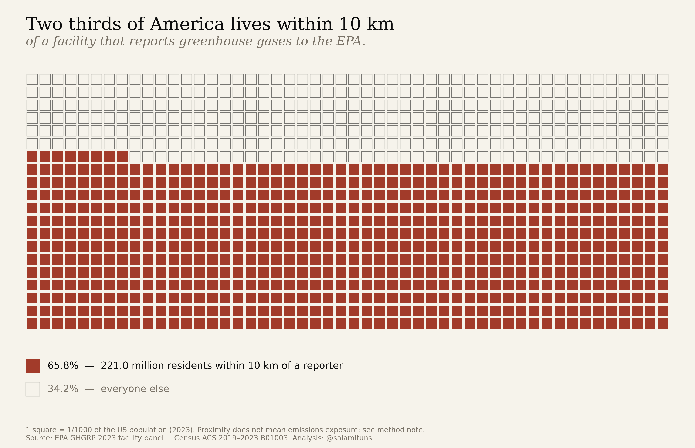
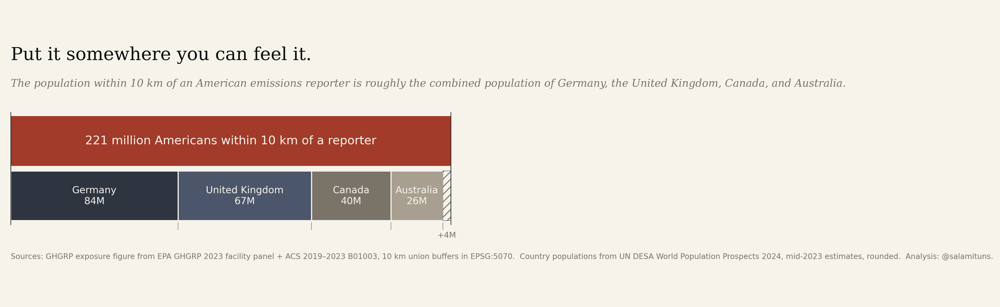
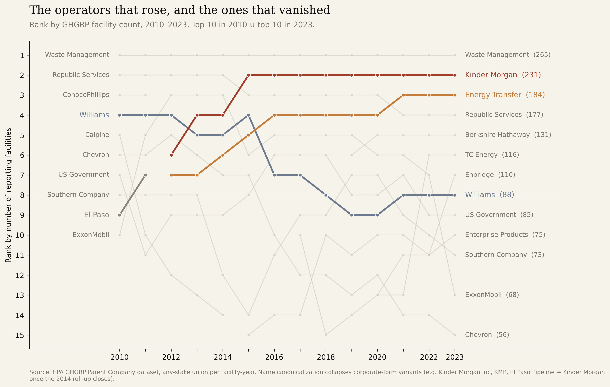
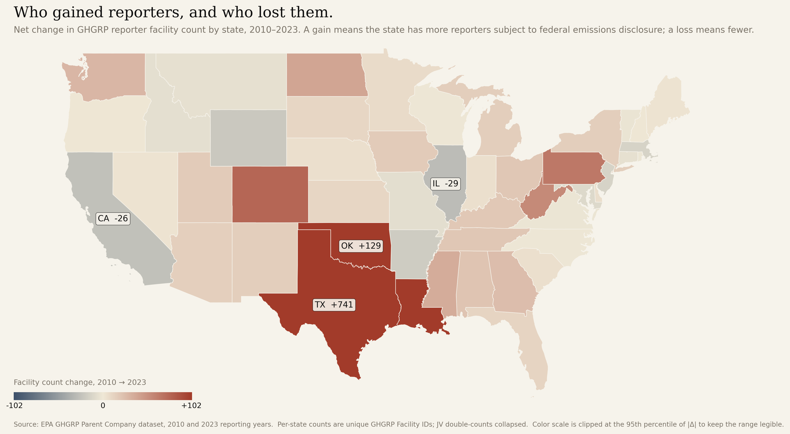
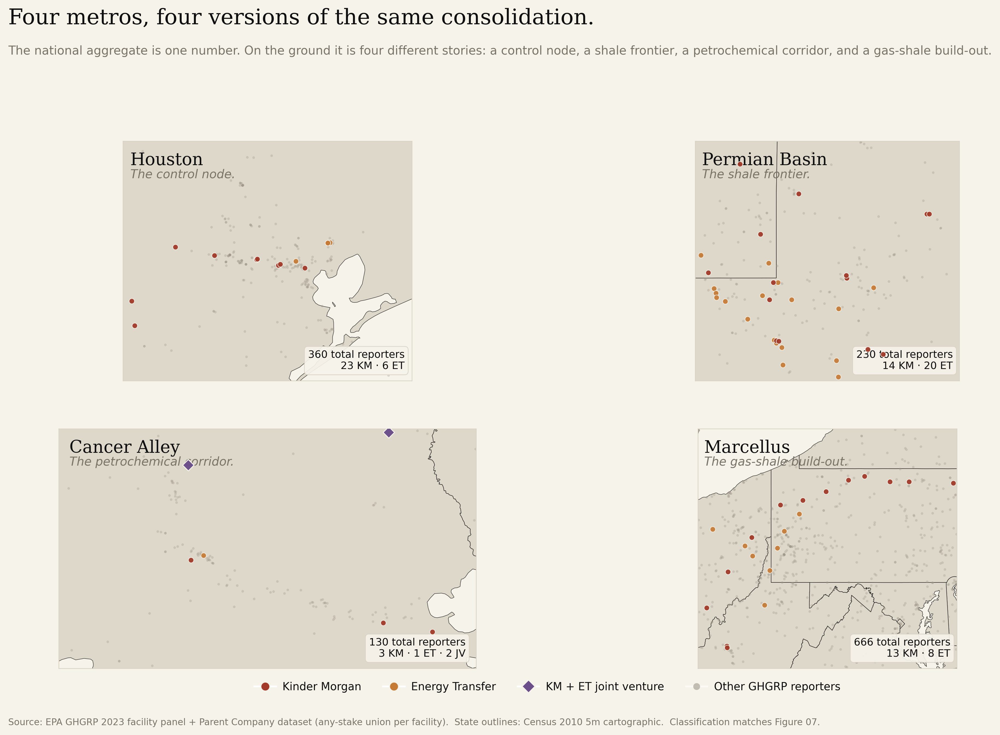

Who owns America’s industrial emissions.
Fourteen years of the EPA Greenhouse Gas Reporting Program, reconciled at the parent-company level. 8,106 facilities, 3,327 parents, and a consolidation pattern that follows the Gulf Coast pipeline grid.
Why this matters
In September 2025 the EPA proposed removing 46 of 47 source categories from the program that produced this dataset. What follows is a map of what we would stop being able to see. Fourteen reporting years show the ground moving beneath the instrument — fewer hands, more facilities, wider reach — and the case for the program is strongest in its own data.
The Numbers
The Figures

The 7,401 facilities that file every year.
Every Lower-48 facility in the 2023 reporting year, sized by its ultimate parent’s facility count. Kinder Morgan (231) and Energy Transfer (184) read as a lattice along the Gulf Coast pipeline corridor.
{kind=link}

Two thirds of America.
One thousand squares, each one a thousandth of the country. 658 of them — 221 million residents — live within 10 km of a facility that files a greenhouse-gas report with the EPA. Proximity is not exposure; it is the measure of how thoroughly industry shares the neighbourhood with the population.
{kind=link}

Germany, the UK, Canada, and Australia.
Same two-thirds, in places you already know. The population within 10 km of a GHGRP reporter is within four million of the combined populations of four G7/Anglosphere democracies. Scale here is not abstract — it is equivalent.

The top ten went from 11.7% to 16.7%.
Top-10 parent share of reporting facilities, 2010–2023, computed under the any-stake union rule. A 43% relative increase. Only 27 companies filed every year across the window.

Two parents run 415 facilities.
Kinder Morgan went from 24 facilities in 2010 to 231 in 2023 (+862%). Energy Transfer, 19 to 184 (+868%). The chart ranks the ten largest reporters and their growth since 2010.
{kind=link}

The operators that rose, and the ones that vanished.
Rank by facility count, 2010–2023, for the union of each year’s top ten. Kinder Morgan arrives in 2012 and seizes rank 2 by 2015 — the shape of the El Paso roll-up. Energy Transfer takes rank 3 through Regency and Sunoco. Williams falls from fourth to eighth; El Paso disappears entirely. The board reshuffles while the program measures it.

The pipeline corridor, mapped.
Zoomed to the Gulf Coast. Seventeen joint-venture facilities (Florida Gas Transmission, Transco, others) read as the shared backbone of otherwise-separate parents.

Petroleum refining is the most concentrated sector.
Top-10 parent share of facilities by sector. Refineries sit at 54.1% — 3.2× the GHGRP-wide baseline. Oil & gas, petrochemicals, and power plants follow, each consolidated differently.

Every major basin tells a different ownership story.
Permian: top-1 = 3.2%. Appalachia: different leader, different curve. Same dataset, different consolidation regimes depending on geology and history.

Weight by emissions, and the story shifts.
The same sectors, re-scored by CO₂e instead of facility count. Refineries jump from 54% to 80%. Petrochemicals double. In every sector the top ten emit more than they count — count-based concentration understates the emissions reality.

Two parents alone reach 7.7 million neighbors.
Zoom on Kinder Morgan and Energy Transfer in 2023. Census-tract populations area-weighted into 10 km buffers; 702,000 within 3 km. Combined footprint: ~100,000 km² — roughly the area of Kentucky. Two companies, the population of Virginia.

200 million to 221 million, across fourteen years.
Every reporting facility in every year, 2010–2023, with milestones pinned on the curve: Subpart W’s 2011 activation (the 9-million-person jump), Kinder Morgan’s 2014 roll-up of El Paso, Energy Transfer’s 2018 consolidation, and the 2022 Inflation Reduction Act. The population layer is frozen at the 2019–2023 ACS so the curve is a facility-entry signal, not a demographic one.
![ Figure 13 — Where the growth landed Texas gained 741 reporters. California lost 26. Net change in facility count per state, 2010–2023. The growth is not spread across the country — it is concentrated in the shale-play and Gulf-petrochemical geography: Texas alone added 741 reporters, Oklahoma 129, Louisiana and Pennsylvania in the high double digits. California, Illinois, and parts of the Northeast lost reporters as older industrial capacity retired without replacement. The national trend in Figure 04 is an average over very different state-level stories.](figures/ghgrp_state_delta_choropleth.png){kind=link}

Texas gained 741 reporters. California lost 26.
Net change in facility count per state, 2010–2023. The growth is not spread across the country — it is concentrated in the shale-play and Gulf-petrochemical geography: Texas alone added 741 reporters, Oklahoma 129, Louisiana and Pennsylvania in the high double digits. California, Illinois, and parts of the Northeast lost reporters as older industrial capacity retired without replacement. The national trend in Figure 04 is an average over very different state-level stories.
![ Figure 14 — Four metros Four metros, four versions of the same consolidation. Same classification as Figure 07, four regional lenses. Houston: 360 reporters, the corporate control node where pipeline and petrochemical head offices concentrate. The Permian: 230 reporters, where Subpart W added thousands of gas-processing sources and Energy Transfer and Kinder Morgan hold the largest share. Cancer Alley: 130 reporters along the Mississippi River corridor, dominated by petrochemical operators that are not KM or ET. The Marcellus: 666 reporters spread across the Appalachian shale, the single densest region in the dataset and the one where KM/ET’s share is smallest. The national aggregate is one number; on the ground it is four different stories.](figures/ghgrp_four_metros_grid.png){kind=link}

Four metros, four versions of the same consolidation.
Same classification as Figure 07, four regional lenses. Houston: 360 reporters, the corporate control node where pipeline and petrochemical head offices concentrate. The Permian: 230 reporters, where Subpart W added thousands of gas-processing sources and Energy Transfer and Kinder Morgan hold the largest share. Cancer Alley: 130 reporters along the Mississippi River corridor, dominated by petrochemical operators that are not KM or ET. The Marcellus: 666 reporters spread across the Appalachian shale, the single densest region in the dataset and the one where KM/ET’s share is smallest. The national aggregate is one number; on the ground it is four different stories.
We’re debating whether to dismantle the monitoring system while the market it monitors is consolidating into fewer hands.
Context
In September 2025 the EPA proposed removing 46 of 47 source categories from mandatory reporting under the GHGRP — the program that produced this dataset. The proposal is out for comment as of this writing.
The question isn’t whether the program is imperfect. It’s whether the answer to imperfection is dismantling the instrument during a period of rapid ownership consolidation in the industries it measures. The figures above are what’s on the table.
Data
- EPA GHGRP Parent Company Dataset
- Fourteen reporting years, 2010–2023. Facility-to-parent reconciliation with name-variant harmonisation and ownership-share weighting for joint ventures.
- EPA GHGRP 2023 Data Summary
- Facility-level emissions (CO₂e), sector classification, geocoordinates, and unit-level reporting for the latest year.
- US Census Tract & County Boundaries
- 2020 TIGER/Line tract and county polygons with ACS 5-year population estimates, used for the 10 km exposure buffer.
- Processed data
- The reconciled files used to produce every figure on this page.
Method
Parent-company reconciliation is the load-bearing step. EPA reports facility-level ownership with name variants (“Kinder Morgan”, “Kinder Morgan Inc.”, “KM CO2 Pipeline LLC”) that collapse to the same ultimate parent. Joint ventures are weighted by ownership share so facilities are not double-counted across partners. The 27-company “reported every year” count reflects continuous presence across all fourteen years, not cumulative presence.
Concentration metrics are the standard antitrust instruments: top-N share, and the Herfindahl-Hirschman Index (HHI = Σs² × 10,000). HHI is reported per sector rather than nationally, because sectors don’t substitute for each other.
Population exposure uses EPSG:5070 (USA Contiguous Albers Equal Area) for accurate distance calculations. Ten-kilometre buffers are drawn around each facility point, unioned across facilities within a year, intersected with Census tract polygons (ACS 5-year, 2019–2023, Table B01003), and area-weighted into the buffer so every tract resident is counted once regardless of overlap. Figure 11 is scoped to Kinder Morgan and Energy Transfer; Figure 12 is the full 8,106-facility panel across all fourteen years. Figure 02 takes the 2023 slice of that panel and re-expresses 65.8% as a tactile thousand-square grid. The population layer is frozen at the 2019–2023 ACS across every year: tract-level population change is <20% over the window while facility count grew 55%, so the curve is a facility-entry signal, not a demographic one.
Processing is Python (pandas, geopandas, shapely). Static figures are matplotlib at 300 DPI. Maps use CARTO basemaps. Full pipeline, intermediate data, and figure code are on GitHub.